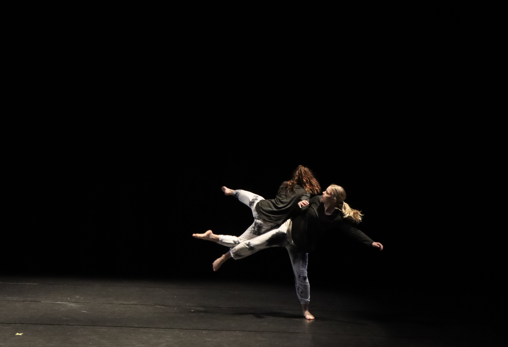

About Me
I'm a photographer and videographer based in [Your Location]. With a passion for capturing moments that tell compelling stories, I specialize in [Your Specialties].
My work has been featured in [Publications/Exhibitions] and I've collaborated with [Notable Clients/Projects].
Get in Touch
Email: your.email@example.com
Instagram: @yourhandle